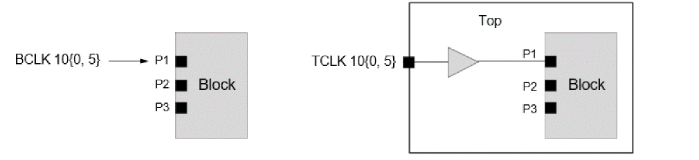
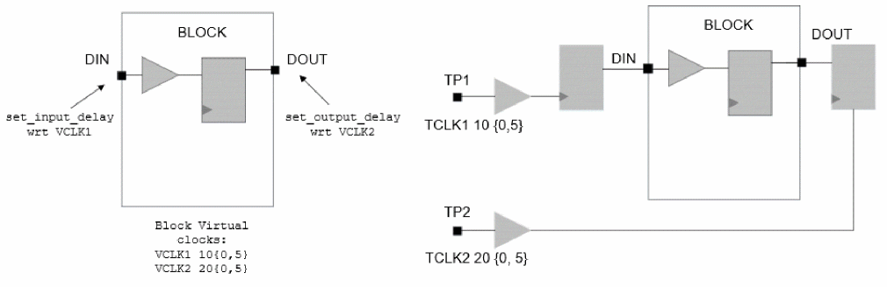
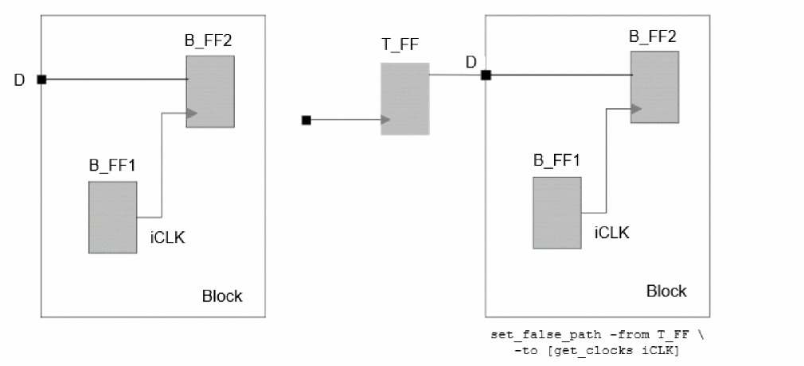

Clock Mapping in Context Flow
What is Clock Mapping
The Timing Context stores various types of data, the following four type of data are associated with top level clocks:
- Latency of top level clock signals entering the block as clock phase
- Arrival of top level data signals entering the block as data phase
- Required time at block output port
- Path Exceptions impacting the block interface paths
Tempus identifies the equivalent block and top level clocks to accurately assert the top level data with correct block level clocks during STA with Timing Context. This process of identifying the equivalent top and block clock pair is called clock mapping, and such clocks are called the mapped top and block clocks, respectively. Any top level clock whose corresponding block clock cannot be identified is called an unmapped top clock. Similarly, any block level clock whose corresponding top clock cannot be identified is called an unmapped block clock.
Tempus also writes out clock mapping reports, which can help to review the mapped or unmapped clock and data phases.
By default, Tempus does not allow the Timing Context analysis in the presence of unmapped top level clocks (either entering block as clock phase or data phase) and stops the context reading with error TA-1024. To continue the analysis with unmapped top level clock phases, the following global variable should be used before context reading:
set timing_hierarchical_context_continue_on_top_block_clock_mismatch true
Types of Data Mapping
Clock Phase Mapping
The following example represents a simple case of clock phase mapping, where:
- In block STA, the clock CLK is defined on port P1 of the block. This clock has period of 10ns with rising edge at 0ns and falling edge at 5ns.
- In Top STA, the clock phase of CLK enters the block port P1. This clock has period of 10 units with rising edge at 0ns and falling edge at 5ns.
- The top level CLK will be mapped to block level CLK.
The figure below illustrates clock phase mapping:

For the mapped block clock BCLK, the following properties will be derived from an equivalent mapped top clock:
- Rise and fall latency at block port P1
- Rise and fall transition (slew) at block port P1
- Polarity of clock signal at block port P1
- Top level pin-based uncertainty (i.e., uncertainty at fanin of block/P1)
Data Phase Mapping
The figure below shows a simple case of data phase mapping, where:
-
Block-level design has two virtual clocks, VCLK1 and VCLK2. The port DIN has data phase with respect to VCLK1 (
set_input_delay) and port DOUT has data phase with respect to VCLK2 (set_output_delay). - In the Top level design, TCLK1 enters the block as data phase (at DIN port). And TCLK2 captures the data from DOUT port of the block.
-
In context analysis, TCLK1 data phase will be mapped with block virtual clock VCLK1. The TCLK2 data phase will be mapped with block virtual clock VCLK2.
Figure -124 Data Phase Mapping

For mapped data phase, the following properties will be derived from the top level:
Path Exception-Based Mapping
The path exception-based mapping refers to mapping of block internal clocks that have top level path exceptions interacting with the block IO.
The figure below shows path exception-based mapping:

- The clock iCLK is defined inside the block and its clock/data phase does not interact with block IO. Hence, this clock is not mapped under clock or data phase mapping.
- However, there is a top level false path from top level flop T_FF to block internal clock iCLK. Since this exception is associated with block IO, it will be modeled in Context.
To apply this exception in block Context Analysis, the block internal clock iCLK needs to be mapped with top level clock iCLK.
Block Internal Clock Mapping
The clocks that are defined internal to the blocks are also mapped. The source clocks (create_clock based) are automatically mapped when the clock is defined on the same pin in both the top and block constraints and have a matching clock property. The generated clocks are mapped based on the matching clock names.
Some of the unmapped internal clocks may not impact reading data from context, but it does indicate potential constraints mis-correlation between top level and block constraints. The correlation between the Top and Block constraints is critical for accurate context analysis.
Types of Clock Mapping
The following two types of clock mapping are supported in the context flow:
- Auto Clock Mapping: The software automatically maps the Top and Block STA clocks based on the auto clock mapping rules. The clocks which do not satisfy the rules remain unmapped (unless mapped by the user).
- User Clock Mapping: You can specify the Top and Block clock pair for mapping. The user-specified clocks are mapped by the software irrespective of whether they follow the auto clock mapping rules. The user-specified clock mapping has a higher priority and will override auto clock mapping. If you map the Top and Block level clocks of different waveforms, then the block level waveform will be used during analysis.
For a successful user clock mapping, the following are required:
- The block and top level clocks should be present at the same block port
- Internal clocks should interact with block IO (Path exception-based)
- If a top level clock enters the block only as data phase, then you should map it with block virtual clocks only
An example of user-defined clock mapping to map top level TCLK with block level BCLK clock is given below:
read_timing_context -clock_mapping_file clkMap.txt
Given below are contents of clkMap.txt:
set_timing_context_clock_mapping -top_clock TCLK -block_clock BCLK -view <analysisViewName>
Return to top